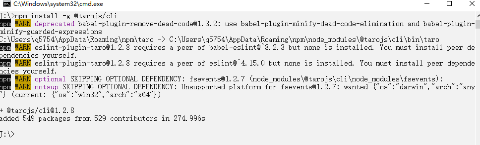
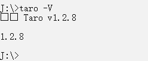
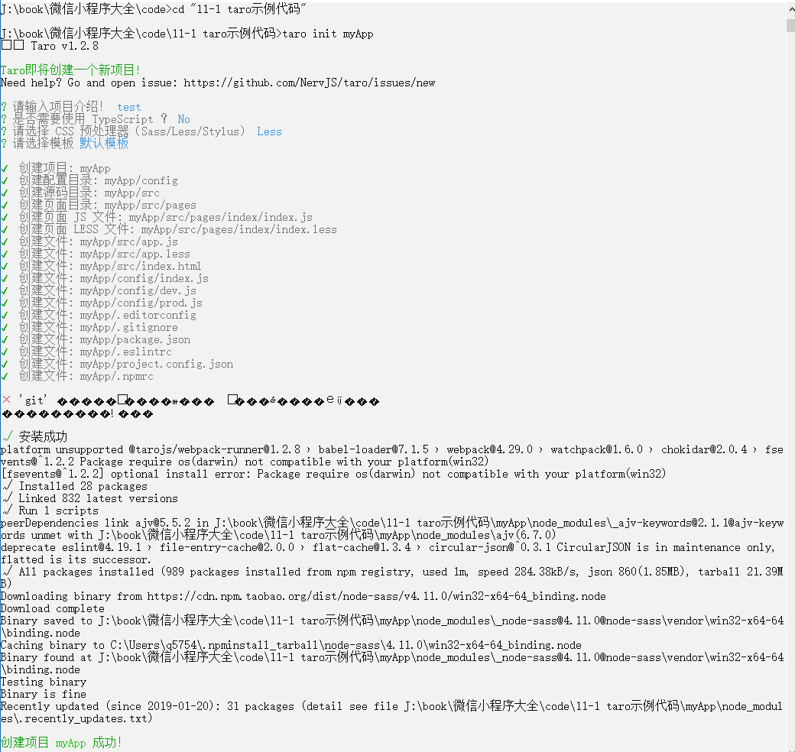
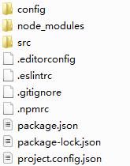
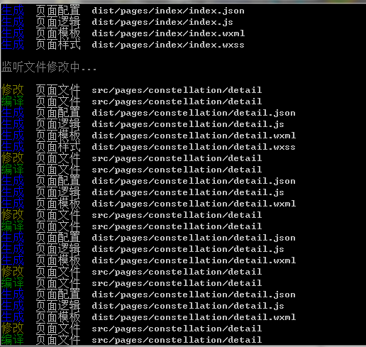

Taro本身实现的情况类似于mpvue，mpvue的未来展望中也包含了支付宝小程序，现在的版本中，也可以使用不同的构建命令来构建出百度小程序的支持，如第10章所示，但是现在Taro先于mpvue实现了更多更好的“一端开发，多端编译”开发方式。
Taro的编写代码方式和mpvue、WePY框架最大的一个差别就是，Taro并不是基于Vue.js的语法规范，而是遵循React语法规范，它采用与React一致的组件化思想，组件生命周期与React保持一致，同时支持JSX语法，让代码具有更丰富的表现力，使用Taro进行开发可以获得和React一致的开发体验。
采用Taro开发小程序具有以下的优秀特效：
（1）Taro项目的开发需要安装专用的Taro开发工具@tarojs/cli，可以使用如下命令全局安装，安装效果如图11-2所示。
npm install -g @tarojs/cli

图11-2 安装Taro
（2）安装成功后，可以使用taro -v测试安装是否成功，效果如图11-3所示，此时可以进行taro项目的开发。

图11-3 安装成功
（3）在项目文件夹中使用如下命令创建Taro小程序，效果如图11-4所示。
taro init myApp

图11-4 使用taro创建项目
项目创建过程中会自动创建git环境并且使用cnpm install命令安装依赖，所以在创建项目成功后不需要手动在该项目程序中使用npm install或者是cnpm install安装依赖，即可直接使用。
注意：npm 5.2以上也可在不全局安装的情况下使用npx创建模板项目，使用“npx @tarojs/cli init myApp”创建项目。
在项目文件夹中自动生成的文件结构，如图11-5所示。因为已经使用了npm安装，所以直接可以运行。

图11-5 文件结构
（4）创建新的项目后，可以使用如下命令运行微信小程序，如果更改文件中的代码，会自动重新加载，效果如图11-6所示。
# npm script
$ npm run dev:weapp
$ npm run build:weapp
# 仅限全局安装
$ taro build --type weapp --watch
$ taro build --type weapp

图11-6 自动监听改动，并且重新加载
微信小程序的结构化开发方法，少走弯路，高效开发，一起来学习《微信小程序项目开发实战：用WePY、mpvue、Taro打造高效的小程序》吧。